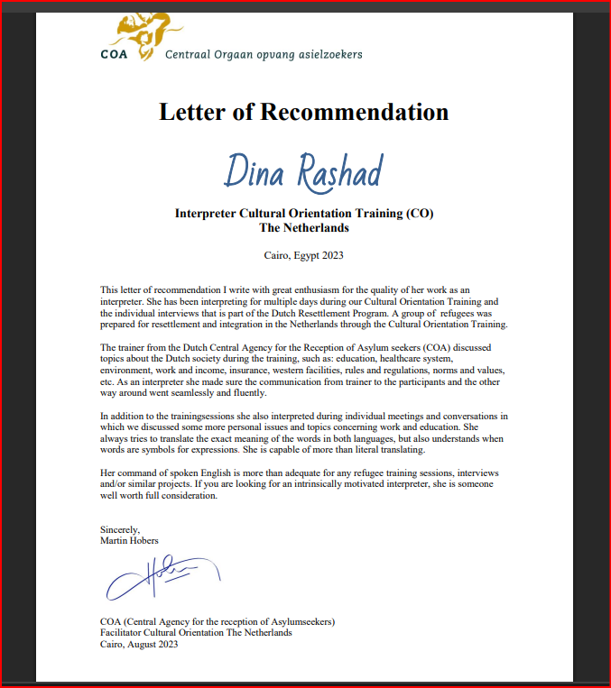
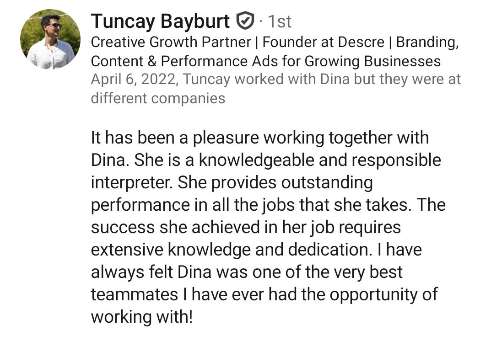
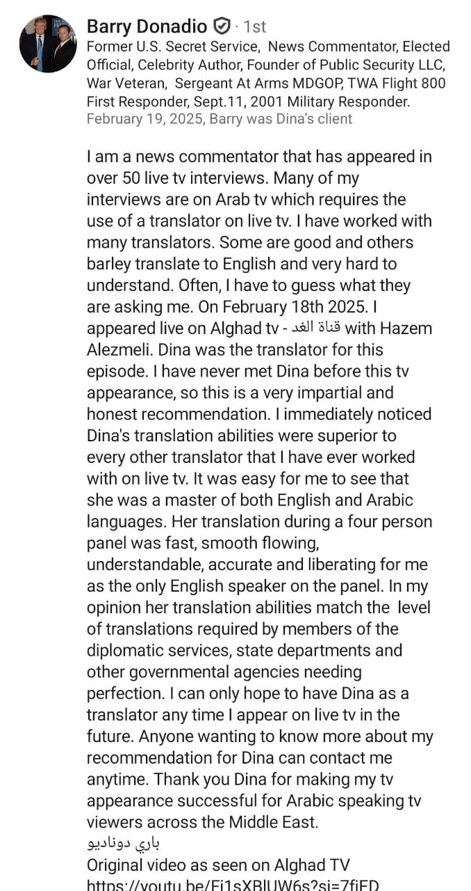

Professional Journey
With over a decade of dedicated experience in the field of conference interpretation, I have had the privilege of serving as the linguistic bridge between Arabic and English speakers at some of the most prestigious events and organizations.
My career in simultaneous interpretation began with a deep passion for languages and cross-cultural communication. Over the years, I have honed my skills through rigorous training, continuous professional development, and hands-on experience across diverse sectors including government, media, technology, and international business.
I specialize in providing real-time interpretation services that go beyond literal translation – capturing nuances, cultural context, and the speaker's intended tone to ensure your message resonates authentically with your audience.
Areas of Expertise
Certifications & Training
-
Professional Conference Interpretation Certification Advanced training in simultaneous and consecutive interpretation techniques
-
Industry-Specific Training Specialized workshops for legal, medical, and technical interpretation
-
Continuous Professional Development Ongoing education to stay current with industry best practices
Recommendations



Let's Work Together
I'm ready to bring professional interpretation expertise to your next event.